CATEGORIES
 All
All
 Celebrity
Celebrity
 Fantasy
Fantasy
 Anime
Anime
 Portrait
Portrait
 Sketch
Sketch
TRENDING PROMPTS
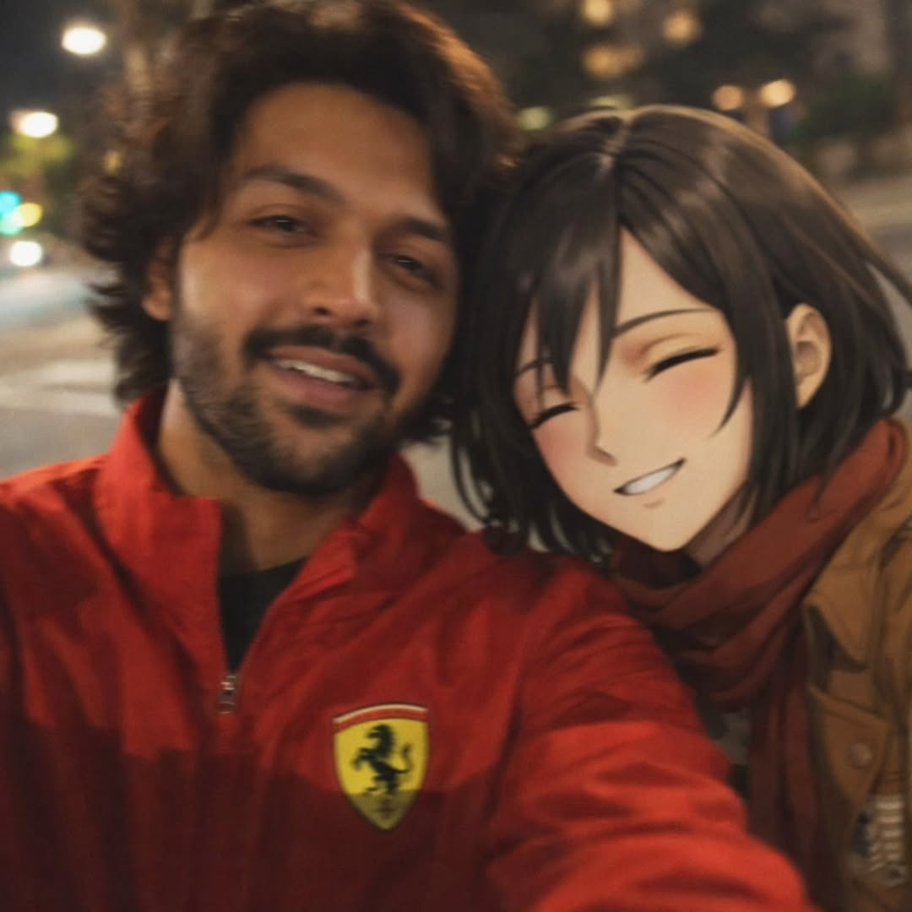
Anime girl selfie
Create a photo taken as a selfie with an iPhone, without any clear subject or composition. It should appear as an unintentional snapshot.he is wearing black suit, The image has slight motion blur and consistent street lighting. Cute moment between them Both images are connected in a instagram grid aspect ratio. Make it
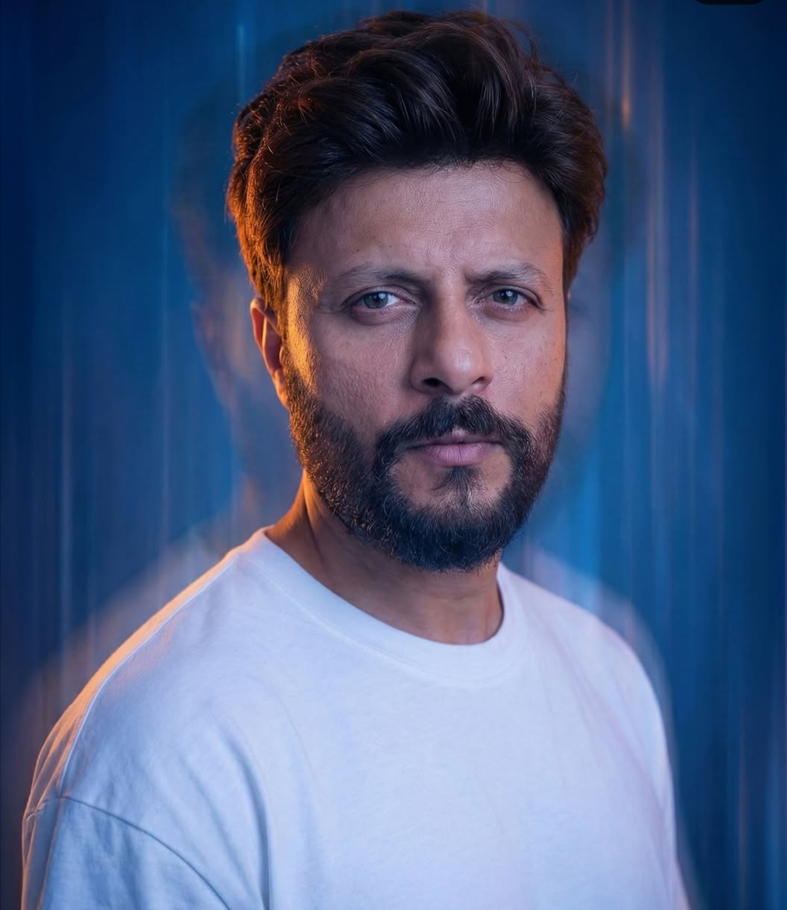
High-Fashion Portrait
Cinematic high-fashion half-portrait of the person from the input photo, keeping the exact face. Blue gradient background, oversized white T-shirt, cool blue ambient light with warm rim highlights. Subtle multi-exposure ghosting, vertical motion streaks, shallow depth (50-85mm f/1.8), crisp skin detail, surreal editorial vibe.
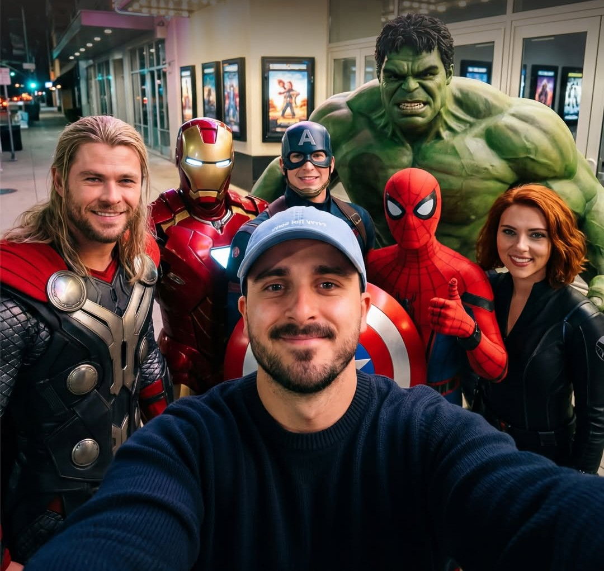
Avengers selfie
A wide-angle selfie-style group photo at the entrance of a modern movie theater at night, bright neon marquee lights and illuminated posters behind the group, glass doors reflecting the street and the lobby glow. A tight crowd of superheroes lean into the frame in a casual “fans photo” energy. Thor is in his armor with a red cape on the left, Iron Man centered in full red-and-gold suit, Hulk towering behind everyone, Captain America in his suit with shield slung over his back just visible in the lower right of the frame, Black Widow on the left side in a tactical black suit, utility detailing, confident pose, leaning in close to fit the shot. The main subject is a young man in a simple dark t-shirt in the foreground, closest to camera, arm fully outstretched toward the lens as if taking the selfie. Only his hand/forearm is visible near the edge of the frame, but no phone or device is visible at any time (hand positioned to imply holding something just off frame). Everyone is slightly angled for the shot, all characters lean forward dynamically. Camera is slightly above eye level with strong perspective distortion from the close lens; background shows the cinema entry stanchions and a few indistinct blurry people in line. Lighting is natural night-time ambient plus cinema signage illumination. No flash. Soft mixed light from neon marquee and poster boxes creating gentle highlights and colored reflections on suits. Realistic low-light exposure with mild motion-freeze from fast shutter; clean but slightly grainy noise baked into the environment. Iron Man’s metallic surfaces react to the light and Captain America’s shield without harsh hot spots. High realism, accurate proportions, detailed fabric texture, subtle wear and gloss on armor. Sharp focus on the foreground subject and heroes, background softly blurred. Replace the character’s face with the face of the person in the reference image. Use the reference as a strict identity guide and preserve 100% of the visible features: skin texture, skin tone, and facial hair. Hair: the hair must be exactly the same as in the reference (same length and hairstyle). Do not invent hair, do not lengthen it, do not change it, do not add white hair or spikes. If the reference includes a cap or a hat, keep it. Accessories: preserve exactly any accessory that appears on the head in the reference (glasses, earrings, piercings, caps, hats, etc.), same size and position. If the reference has no accessories, do not add any new ones. Format: Ultra-realistic photo. Shot on a Leica M6 with 35mm Summicron. Visible 35mm film grain. Hard daylight. ISO noise in backdrop shadows. Warm cast in highlight edge areas. Minor chromatic aberration at hairline. No stylizing tricks, no digital cleanup, no artificial glow. Matte skin, visible pores, light freckles. Background blurred.
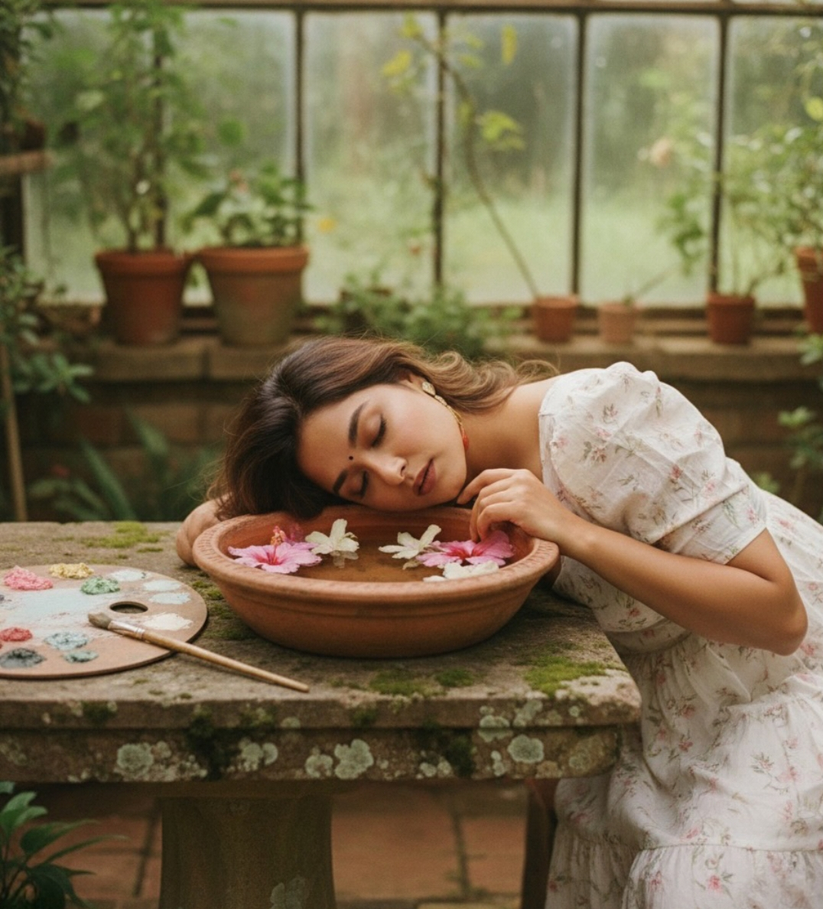
Fine-Art Portrait
An intimate fine-art portrait of the same woman resting her head on a rustic terracotta water dish placed on an old moss-covered stone table. The scene is bathed in soft, natural afternoon light from a greenhouse window. Pink hibiscus and azalea petals float on the water surface beside her. Her eyes are closed peacefully, her expression tender and contemplative. A painter's palette with pastel shades and a single brush lies nearby, hinting at artistic solitude. She wears her white floral puff-sleeve dress with a slightly wrinkled texture, her hair softly curled and slightly tousled. The tone is painterly, calm, melancholic, and ele-gant. Style: cinematic portrait, muted green and warm tones, natural soft lighting, vintage film look, artistic depth
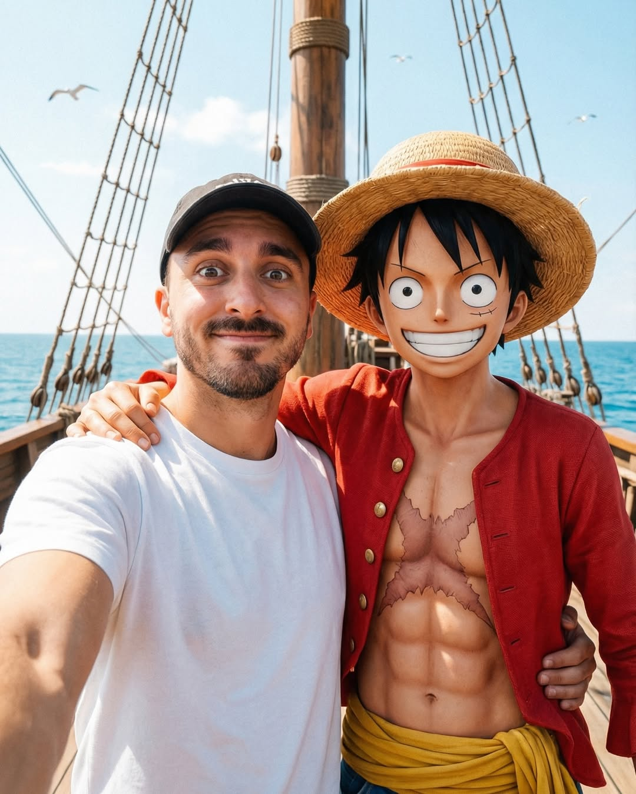
Monkey D. Luffy selfie
Vertical selfie photo (9:16). Smartphone front camera at face height, slight wide-angle distortion, close chest-up framing. In the background: the Thousand Sunny ship deck from One Piece, wooden mast, ropes and sails visible, bright blue sky and ocean behind. The scene feels like a casual group selfie taken on the ship. Monkey D. Luffy stands on the right wearing his red vest and straw hat, smiling widely. Roronoa Zoro stands slightly behind with his swords visible at his waist, calm expression. Nami leans into the frame with her orange hair and confident smile. Sanji appears on the left side wearing his black suit and blond hair covering one eye. Usopp peeks from behind with his goggles and long nose. Tony Tony Chopper stands near the front smiling. The main subject is a young man in the foreground closest to the camera, arm extended as if holding the phone to take the selfie. Only part of his arm/hand appears near the edge of the frame to imply a selfie perspective. Everyone leans slightly toward the camera with a friendly, spontaneous selfie pose. Camera angle slightly above eye level with perspective distortion from the phone lens. Lighting is bright daylight with natural sun highlights and soft shadows. Realistic skin texture, detailed clothing folds, subtle wind moving hair and clothing. Ocean and sky slightly blurred in the background for depth. Replace the main subject’s face with the face of the person in the reference image. Use the reference as a strict identity guide and preserve 100% of the visible features: skin tone, skin texture and facial hair. Hair: must be exactly the same as in the reference image (same length and hairstyle). Do not invent hair, do not change it. If the reference includes a hat or cap, keep it. Accessories: preserve any accessories from the reference image (glasses, earrings, piercings, hats etc.). If the reference has none, do not add any. Style: ultra-realistic photo, cinematic lighting, visible pores and natural skin texture, slight film grain, realistic depth of field, background softly blurred.
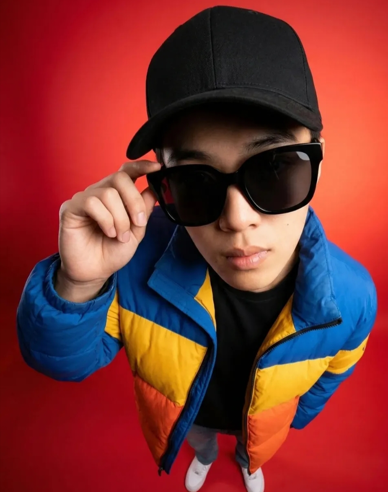
Fisheye Portrait
Convert uploaded photo into ultra-wide 10mm fisheye portrait from dramatic high top-down angle with strong perspective distortion (larger head, compressed body). Add black oversized sunglasses and plain black cap, left hand adjusting sunglasses, confident upward gaze. Color-block puffer jacket (blue/yellow/orange), black tee, white sneakers. Bold red studio background, smooth gradient, high contrast, sharp editorial lighting, 8k.
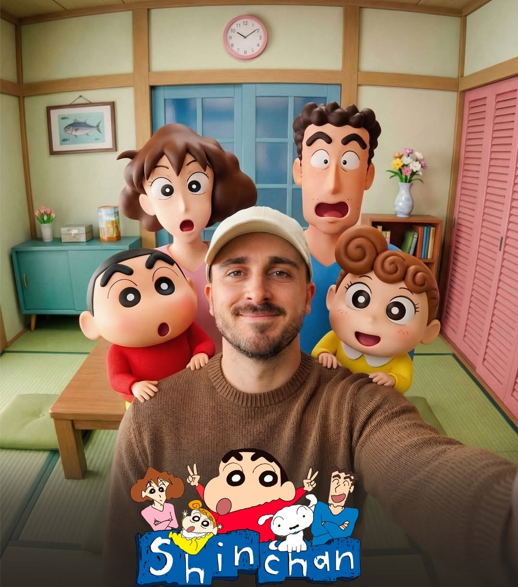
Shinchan selfie
A highly detailed, ultra-realistic 9:16 vertical format selfie taken with a wide-angle lens, based on the composition and character styles from image_1.png, set within a realistic version of the living room from image_0.png. The main subject, a man in a blue knit sweater and a light blue baseball cap exactly as seen in image_1.png, holds the phone with his right arm extended to capture the shot. Curiously, the main subject (the man in the cap) has a slight smile, looking straight at the camera. Behind him, also as detailed in image_1.png, are Misae Nohara and Hiroshi Nohara, both making their stylized, open-mouthed, wide-eyed surprised expressions. Perched on the man’s shoulders on the left is Shinnosuke in his red sweater, also showing the same surprised, round-mouthed expression from image_1.png. On the man’s shoulder on the right is Himawari, but her hairstyle is distinct. It is the complex, tightly curled brown hair from image_2.png, featuring precise decorative double scroll curls symmetrically arranged in the front bangs and a single, tight, large-volume side curl on her left. She retains her small smile and open mouth from image_1.png. The background is a detailed, realistic recreation of the image_0.png living room: green tatami floor mats with traditional green cloth borders, textured light green walls, a polished wooden low table, and the specific teal sideboard with blue glass doors. Above the sideboard is the framed picture on the wall with the vase of flowers and books in their places. In the far left background, a realistic natural pink accordion-pleat curtain is visible. The room is brightly lit with cinematic, realistic daylight emphasizing the soft textures and gentle realism of the cartoon environment. The lighting perspective creates a noticeable fisheye distortion. [IDENTITY BLOCK] Replace the main subject’s face (the man in the cap) with the face of the person in the reference image. Use the reference as a strict identity guide and preserve 100% of the visible features: skin tone, skin texture, and facial hair. Hair: must be exactly the same as in the reference (same length and hairstyle). Do not invent hair, do not lengthen it, do not change it, do not add white hair or spikes. If the reference includes a cap or hat, keep it. Accessories: preserve exactly any accessory that appears on the head in the reference (glasses, earrings, piercings, caps, hats, etc.), same size and position. If the reference has no accessories, do not add any new ones. [STYLE BLOCK] Format: Ultra-realistic photo. Shot on a Leica M6 with 35mm Summicron. Visible 35mm film grain. Hard daylight. ISO noise in backdrops. Warm cast in highlight edge areas. Minor chromatic aberration at hairline. No stylizing tricks, no digital clean up, no artificial glow. Matte skin, visible pores, light freckles. Background blurred.g
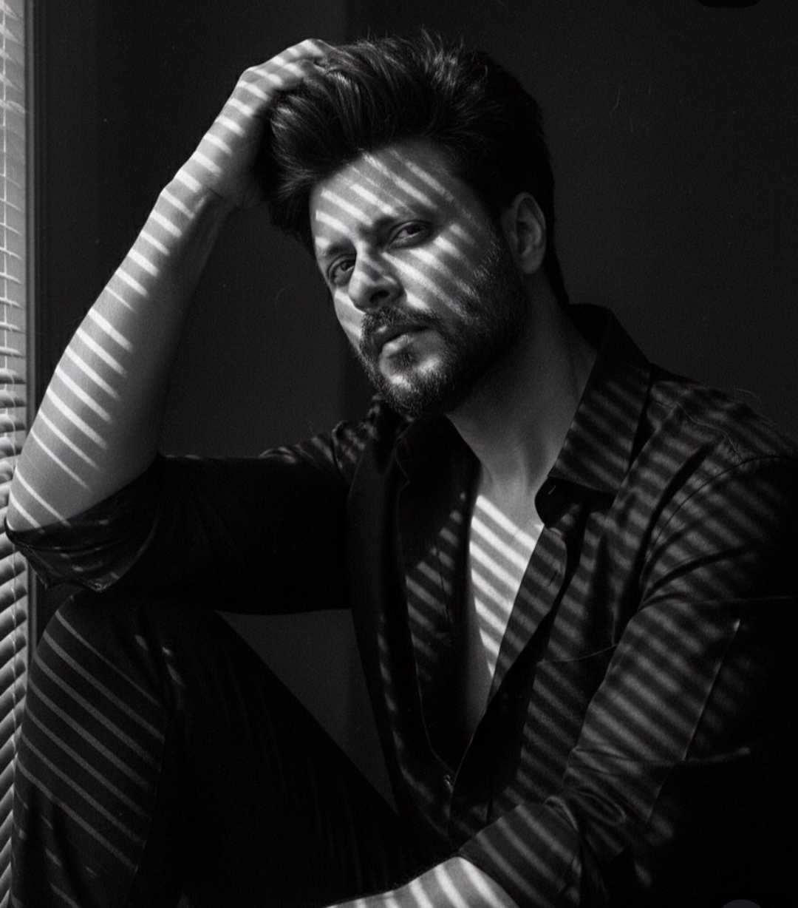
Shadow Portrait
A hyperrealistic 8K black and white cinematic portrait of a handsome man with natural freckles and soft full lips. He's wearing black shirt unbuttoned, sleeves rolled up. He is seated sideways near a window, his body turned slightly away from the camera while his face gently tilts back toward the lens, catching the incoming light. One arm rests loosely on his lap, the other raised with fingers brushing his hair, adding natural elegance to the pose. Sharp beams of sunlight cut t hrough blinds, falling diagonally across his face and body, creating patterns of high contrast that resemble shimmering underwa-ter light. The interplay of shadow and brightness sculpts his features, highlighting the fine detail of his skin texture - visible pores, faint freckles, and the delicate sheen of natural light on her lips and cheekbones. The background is deep and minimal, dissolving into soft gradients of black, with dust particles faint-ly visible in the illuminated air. Film-like grain enhances the analog quality of the portrait, while the high contrast of pure blacks against luminous whites makes the composition time-less and editorial. The overall mood is intimate, elegant, and emotionally evocative a portrait that blends fashion photog-raphy with poetic cinematic drama. Don't change the face. (Use the attached image)
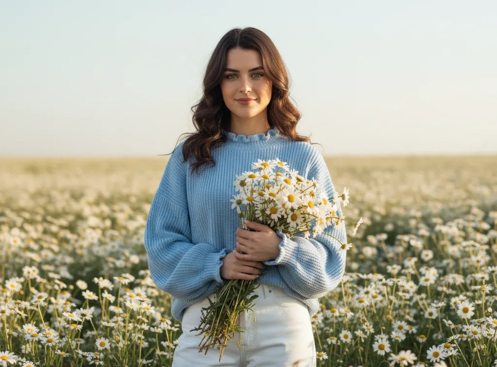
Floral Portrait
Portrait of a beautiful young woman (based on uploaded image) standing in a dreamy flower field full of white daisies, wearing an oversized pastel blue sweater with ruffle details and white baggy jeans pants. She holds a bouquet of fresh daisies in her hands, soft sunlight shining,cinematic composition, low-angle shot with blurred daisies in the foreground, pastel tones, dreamy romantic atmosphere, ultra realistic 8K photography.
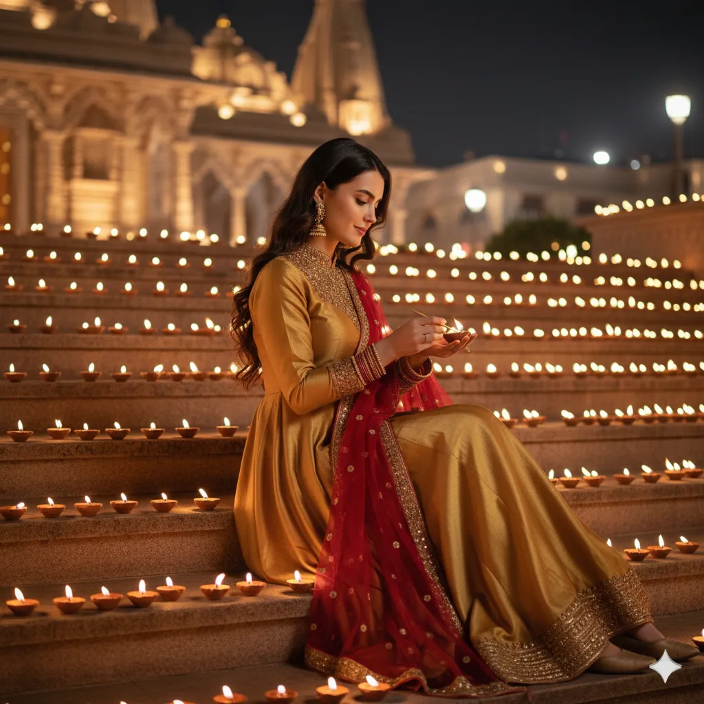
Diwali lights
Create a Diwali celebration scene inspired by Ayodhya. Use the same girl from the provided reference image exactly as she is. She is seated gracefully on illuminated steps lined with rows of glowing diyas arranged in patterns. It is nighttime, and the stairs are beautifully lit with countless diyas creating a warm festive glow. She holds a diya in her hands as she lights it gently. She is dressed in a golden-red Anarkali suit featuring delicate thread embroidery around the neckline, giving a rich Pinterest-style aesthetic. Her hair is open and flowing naturally, enhancing the serene and traditional festive mood.
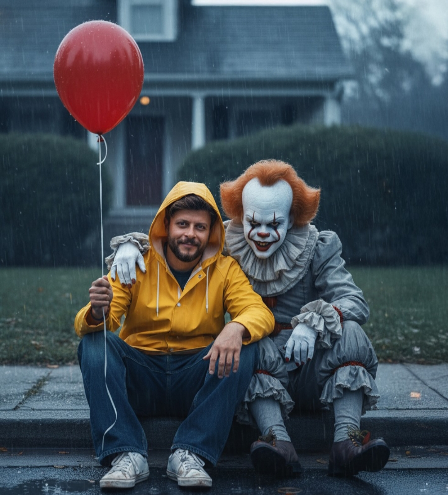
IT selfie
From the image provided, generate a new hyper-realistic image in the foreground portraying a man with short to medium brown hair and fair skin, maintaining his real facial features without alteration. He is sitting on the sidewalk wearing a yellow raincoat with the hood up, leaving his face visible. He wears dark blue wide-leg jeans and slightly dirty white sneakers. In his right hand, he holds a red balloon, and with his left arm, he friendly hugs the clown Pennywise, who appears beside him. The background, slightly blurred, shows an American-style house with a front garden. The environment is humid, with light rain and wet asphalt, illuminated by bluish and cold tones that create a dark, melan cholic mood. The lighting is natural and soft, with subtle reflections in puddles and realistic sparkles on the balloon. The image conveys a cinematic atmosphere of gentle tension and mystery, like a movie scene. Style: ultra-realistic quality 8K, Halloween photo style with an artistic touch. Don't change the face. (Use the attached image)
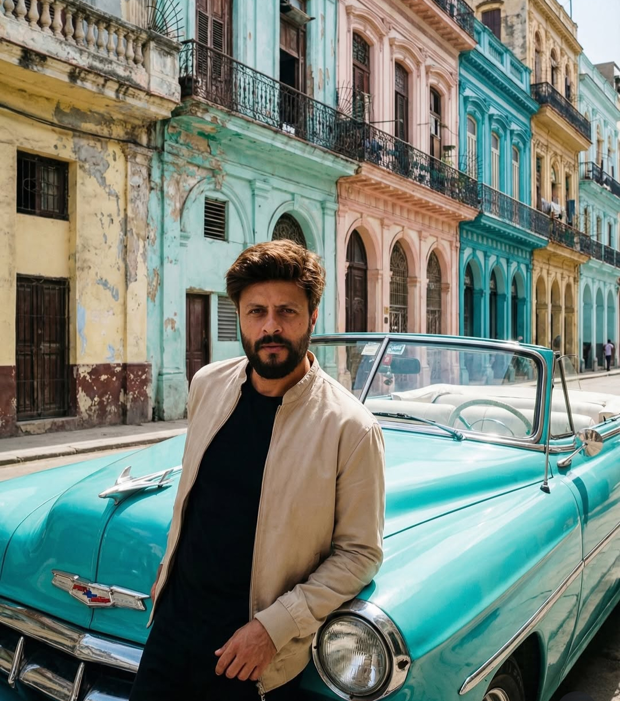
Street Portrait
Vibrant street shot in Old Havana, Cuba, leaning against a vintage tur quoise 1950s convertible car. Wearing beige colour jacket shamwa. The background features colorful peeling colonial buildings. Harsh, bright Caribbean sunlight creates distinct shadows. Shot on Leica M10-R, Leica Summilux-M 35mm f/1.4 ASPH Lens, Aperture f/4.0, ISO 100, Shutter Speed 1/1000s. Vintage color grading, Kodachrome film simulation, sharp detalls, KEEP FACE FEATURES IDENTICAL FROM ATTACHED IMAGE no cartoon, illustra tion, 3d, sketch, low resolution, blurry, distorted face, bad eyes, asym metric eyes, extra limbs, missing fingers, mutated hands, bad anatomy, ugly, text, watermark, grain, noise, oversaturated, age alteration, facial modification, makeup, mask, beige turtleneck sweater.